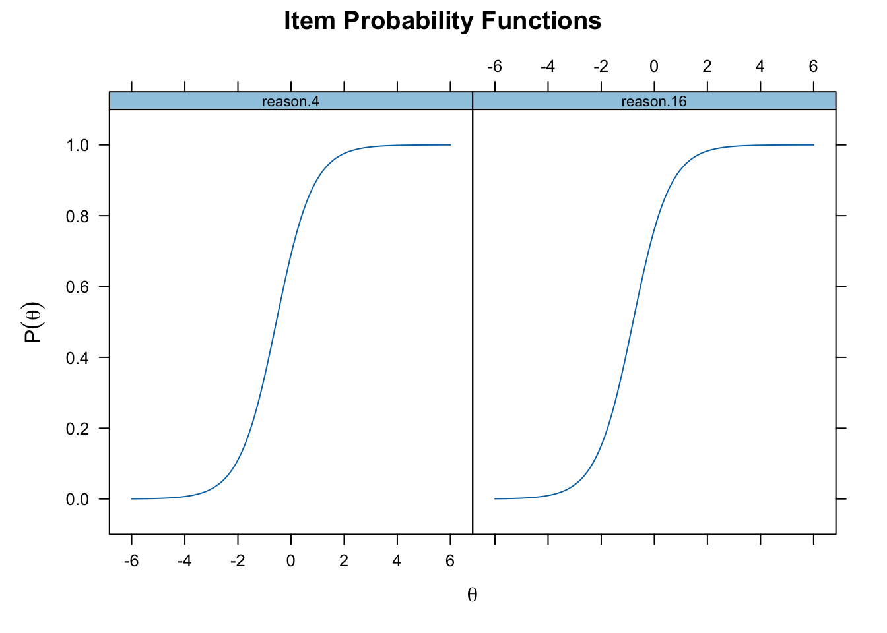

library(hemp)
data(SAPA)
?SAPA7 Item Response Theory: Dichotomous Items
7.1 Introduction to Item Response Theory
7.1.1 Synthetic Aperture Personality Assessment (SAPA)
To learn more about this data you can use the R help function after loading the hemp package as follows,
and you can also go the the SAPA website at https://www.sapa-project.org/.
You should spend some time familiarizing yourself with the data, a process you should be able to do on your own.
str(SAPA)'data.frame': 1525 obs. of 16 variables:
$ reason.4 : num 0 0 0 1 0 1 1 0 1 1 ...
$ reason.16: num 0 0 1 0 1 1 1 1 1 1 ...
$ reason.17: num 0 1 1 0 1 1 1 0 0 1 ...
$ reason.19: num 0 0 0 0 0 1 1 0 1 1 ...
$ letter.7 : num 0 1 1 0 0 1 1 0 0 0 ...
$ letter.33: num 1 0 0 0 1 1 1 0 1 0 ...
$ letter.34: num 0 1 0 1 0 1 1 0 1 1 ...
$ letter.58: num 0 0 0 0 0 1 1 0 1 0 ...
$ matrix.45: num 0 0 1 0 1 1 1 0 1 1 ...
$ matrix.46: num 0 0 1 0 1 1 1 1 0 1 ...
$ matrix.47: num 0 0 0 0 0 1 1 1 0 0 ...
$ matrix.55: num 1 0 0 0 0 0 0 0 0 0 ...
$ rotate.3 : num 0 0 0 0 0 1 1 0 0 0 ...
$ rotate.4 : num 0 0 0 0 0 1 1 1 0 0 ...
$ rotate.6 : num 0 1 0 0 0 1 1 0 0 0 ...
$ rotate.8 : num 0 0 0 0 0 0 1 0 0 0 ...summary(SAPA) reason.4 reason.16 reason.17 reason.19
Min. :0.0000 Min. :0.0000 Min. :0.0000 Min. :0.0000
1st Qu.:0.0000 1st Qu.:0.0000 1st Qu.:0.0000 1st Qu.:0.0000
Median :1.0000 Median :1.0000 Median :1.0000 Median :1.0000
Mean :0.6402 Mean :0.6982 Mean :0.6973 Mean :0.6152
3rd Qu.:1.0000 3rd Qu.:1.0000 3rd Qu.:1.0000 3rd Qu.:1.0000
Max. :1.0000 Max. :1.0000 Max. :1.0000 Max. :1.0000
NA's :2 NA's :1 NA's :2 NA's :2
letter.7 letter.33 letter.34 letter.58
Min. :0.0000 Min. :0.0000 Min. :0.0000 Min. :0.0000
1st Qu.:0.0000 1st Qu.:0.0000 1st Qu.:0.0000 1st Qu.:0.0000
Median :1.0000 Median :1.0000 Median :1.0000 Median :0.0000
Mean :0.5997 Mean :0.5712 Mean :0.6133 Mean :0.4439
3rd Qu.:1.0000 3rd Qu.:1.0000 3rd Qu.:1.0000 3rd Qu.:1.0000
Max. :1.0000 Max. :1.0000 Max. :1.0000 Max. :1.0000
NA's :1 NA's :2 NA's :2
matrix.45 matrix.46 matrix.47 matrix.55
Min. :0.0000 Min. :0.0000 Min. :0.0000 Min. :0.000
1st Qu.:0.0000 1st Qu.:0.0000 1st Qu.:0.0000 1st Qu.:0.000
Median :1.0000 Median :1.0000 Median :1.0000 Median :0.000
Mean :0.5259 Mean :0.5499 Mean :0.6139 Mean :0.374
3rd Qu.:1.0000 3rd Qu.:1.0000 3rd Qu.:1.0000 3rd Qu.:1.000
Max. :1.0000 Max. :1.0000 Max. :1.0000 Max. :1.000
NA's :2 NA's :1 NA's :2 NA's :1
rotate.3 rotate.4 rotate.6 rotate.8
Min. :0.0000 Min. :0.0000 Min. :0.0000 Min. :0.000
1st Qu.:0.0000 1st Qu.:0.0000 1st Qu.:0.0000 1st Qu.:0.000
Median :0.0000 Median :0.0000 Median :0.0000 Median :0.000
Mean :0.1937 Mean :0.2127 Mean :0.2994 Mean :0.185
3rd Qu.:0.0000 3rd Qu.:0.0000 3rd Qu.:1.0000 3rd Qu.:0.000
Max. :1.0000 Max. :1.0000 Max. :1.0000 Max. :1.000
NA's :2 NA's :2 NA's :2 NA's :1 Example of a test item:
Which of the following is an example of a chemical reaction?
A. A rainbow
B. Lightning
C. Burning wood
D. Melting snow
What must one know to answer this question?
be able to read and comprehend English
understand the question format
know the meaning of “chemical reaction”
know they can make only one choice, and how to record it
that a rainbow results from refracting light
lightning is an electric discharge
melting snow is a change of state
that burning wood is combination of the molecular structure of wood with oxygen to yield a different compound
This fairly straight-forward question is complex!
7.1.2 Logit Scale
A Logit is just the log odds and it is a s-shaped functional form. For IRT higher logits means a higher probability of answering a question correctly. The use of a logit scale (there are other options, such as the probit scale) allows us to do mathematical operations to results gathered from items on the nominal or ordinal scales.
7.1.3 Item Parameters
7.1.3.1 Item Difficulty
Each scale item has an item difficulty value represented as its location within the range of ability, which is often represented as theta (\(\theta\)). For dichotomous items, the item difficulty is defined as the point on the ability range that represents the person having a 50% chance of endorsing the item (e.g. answering it correctly). People with a higher ability (i.e. higher \(\theta\), which is on the logit scale) will have a higher likelihood of answering the item correctly, and those with lower ability will be less likely to answer it correctly. Items with higher logit values are more difficult, requiring persons to have a higher \(\theta\) to endorse the item with the same likelihood.
7.1.3.2 Item Discrimination
The item difficulty is the point on the s-curve where the slope is steepest (and also is in the middle of the curve as it is symmetrical). The logit for this location is zero. The steepness of the s-shaped curve in the middle represents the item discrimination, and the steeper the curve the better the item is at discriminating between persons higher in ability from those lower in ability. Generally, items with higher item discrimination are preferred.
7.1.3.3 General Assumptions Underlying Item Response Theory Models
- Unidimensionality of the latent construct
- Parallel item characteristic curves
- Local independence after considering person parameter
7.2 Unidimensional IRT Models for Dichotomous Items
In this section we will explore four unidimensional IRT models for dichotomous items. These include the one-parameter, two-parameter, three-parameter, and four-parameter models.
7.2.1 1-PL IRT Model or the Rasch Model
To understand these parameters we will consider how they are related in IRT models. We will start with the simplest model known as the one parameter logistic IRT model and also as the Rasch model. The “one-parameter” is because this model only has one item parameter, namely, item difficulty. Item discrimination is assumed to be equal across items.
\[ P(Y_{ij} = 1 | \theta_j, a, b_j) = \frac{\text{exp}(Da(\theta_j - b_i))}{1 + \text{exp}(Da(\theta_j - b_i))} \]
where \(\theta_j\) is the level of the latent trait for person \(j\), \(a\) is the item discrimination parameter. The parameter \(b_i\), represents the item difficulty for item \(i\), and \(D\) is a constant, that scales the monotonic function for the logistic model onto a normal ogive model, where \(D = 1.7\).
IRT is a probabilistic model of responses to a given item based on an underlying latent ability. “A latent trait is a characteristic or ability of an individual that is not directly observable but instead must be inferred based on some aspect of a person’s performance or presentation” (Baylor et al. 2011).
The probability of item endorsement is referred to as theta (\(\theta\)), and us a is a monotonically increasing function of the latent ability.
Let’s see this model in action with our example data
# install.packages("mirt")
library("mirt")
library("hemp")Look at the help file for mirt, and browse the vignettes.
First, we will define the model as follows:
onepl_mod <- "
F = 1 - 16
CONSTRAIN = (1 - 16, a1)
"The F represents the latent ability, and is manifested by columns 1-16 in the data. The CONSTRAIN command constrains the used items to have the same item discrimination (\(a\)). Note mirt uses \(a1\) to represent item discrimination instead of \(a\). This model object is then passed to the mirt() function as follows:
onepl_fit <- mirt(data = SAPA, model = onepl_mod,
SE = TRUE)
Iteration: 1, Log-Lik: -13494.679, Max-Change: 0.23406
Iteration: 2, Log-Lik: -13335.854, Max-Change: 0.12756
Iteration: 3, Log-Lik: -13292.524, Max-Change: 0.07878
Iteration: 4, Log-Lik: -13277.030, Max-Change: 0.05217
Iteration: 5, Log-Lik: -13270.789, Max-Change: 0.03431
Iteration: 6, Log-Lik: -13268.209, Max-Change: 0.02244
Iteration: 7, Log-Lik: -13266.529, Max-Change: 0.00847
Iteration: 8, Log-Lik: -13266.376, Max-Change: 0.00575
Iteration: 9, Log-Lik: -13266.308, Max-Change: 0.00382
Iteration: 10, Log-Lik: -13266.259, Max-Change: 0.00131
Iteration: 11, Log-Lik: -13266.255, Max-Change: 0.00084
Iteration: 12, Log-Lik: -13266.253, Max-Change: 0.00062
Iteration: 13, Log-Lik: -13266.251, Max-Change: 0.00017
Iteration: 14, Log-Lik: -13266.251, Max-Change: 0.00013
Iteration: 15, Log-Lik: -13266.251, Max-Change: 0.00009
Calculating information matrix...With the model estimated, we can save the parameters to another object, which can be useful, as there are many parameters estimated.
onepl_params <- coef(onepl_fit, IRTpars = TRUE,
simplify = TRUE)By setting IRTpars = TRUE we will get traditional IRT parameters, instead of an intercept and a slope with is the default in mirt.
\[ b_i = \frac{-d_i}{a1_i} \] where \(d\) is the intercept parameter, which represents item easiness (think CTT), \(a1_i\) is the slope parameter, which represents item discrimination, and \(b_i\) item difficulty and is the traditional IRT parameter we want.
The simplify = TRUE puts the item parameters into a data frame for ease of use.
To explore the parameters, we will look at the item parameters first. We start with looking at the first few.
onepl_items <- onepl_params$items
head(onepl_items) a b g u
reason.4 1.445587 -0.5557199 0 1
reason.16 1.445587 -0.8020747 0 1
reason.17 1.445587 -0.7980649 0 1
reason.19 1.445587 -0.4546611 0 1
letter.7 1.445587 -0.3923381 0 1
letter.33 1.445587 -0.2810892 0 1Notice that the a parameter is estimated to be 1.45 and are all the same, which makes sense in light of constraining them to be the same. The b parameter varies across items, and reflects the estimated difficulty of these items. The g parameter is the lower asymptote, or the lowest value of on the y-axis of the s-curve, which represents the guessing parameter (we will discuss later). Finally, u is the upper asymptote, or the maximum value on the y-axis of the s-curve. Again these last two parameters are not estimated here, and will be important for more complex models later.
To see the standard errors of the estimates we do the following
onepl_se <- coef(onepl_fit, printSE = TRUE)
names(onepl_se) [1] "reason.4" "reason.16" "reason.17" "reason.19" "letter.7" "letter.33"
[7] "letter.34" "letter.58" "matrix.45" "matrix.46" "matrix.47" "matrix.55"
[13] "rotate.3" "rotate.4" "rotate.6" "rotate.8" "GroupPars"plot(onepl_fit, type = "trace", which.items = 1:2)
itemplot(onepl_fit, type = "infoSE", item =1, )
7.2.2 Two-Parameter Logistic Model
Recall the equation for the one parameter logistics model: \[ P(Y_{ij} = 1 | \theta_j, a, b_j) = \frac{\text{exp}(Da(\theta_j - b_i))}{1 + \text{exp}(Da(\theta_j - b_i))} \tag{7.1}\]
The equation \[ P(Y_{ij} = 1 | \theta_j, a, b_j) = \frac{\text{exp}(Da_i(\theta_j - b_i))}{1 + \text{exp}(Da_i(\theta_j - b_i))} \tag{7.2}\]
twopl_mod <- "F = 1 - 16"
twopl_fit <- mirt(data = SAPA, model = twopl_mod,
itemtype = "2PL", SE = TRUE,
verbose = FALSE)
twopl_params <- coef(twopl_fit, IRTpars = TRUE,
simplify = TRUE)
twopl_items <- twopl_params$items
twopl_items a b g u
reason.4 1.6924256 -0.5127258 0 1
reason.16 1.4616058 -0.7967194 0 1
reason.17 1.8568189 -0.7052519 0 1
reason.19 1.4429276 -0.4544282 0 1
letter.7 1.5739581 -0.3749607 0 1
letter.33 1.3512472 -0.2906578 0 1
letter.34 1.6568903 -0.4165187 0 1
letter.58 1.4637541 0.2090402 0 1
matrix.45 1.0649705 -0.1241352 0 1
matrix.46 1.1060157 -0.2292152 0 1
matrix.47 1.3463316 -0.4666121 0 1
matrix.55 0.8786048 0.6793708 0 1
rotate.3 1.7878172 1.1986461 0 1
rotate.4 2.0841977 1.0317428 0 1
rotate.6 1.6388551 0.7524753 0 1
rotate.8 1.5855260 1.3201267 0 1Note that unlike with the 1-PL model in which the a (discrimination) parameter was constant but the b (difficulty) parameter varied across items, for the 2-PL model both parameters are estimated for each item. We can see this by plotting the item characteristics curves (ICC).
plot(twopl_fit, type = "trace", which.items = c(12, 14))The steepness of the curve reflects the dicrimination of the item, so rotate.4 better discriminates participants low and high on the latent trait compared to matrix.55.
Below, we plot two items with very similar discriminations, but different difficulties. Here
plot(twopl_fit, type = "trace", which.items = c(5, 16),
facet_items = FALSE, auto.key = list(points = FALSE,
lines = TRUE,
columns = 2),
par.settings = simpleTheme(lty = 1:2))rotate.8) has a higher difficulty than the other (letter.7).7.2.3 Three-Parameter Logistic Model
The three-parameter logistic (3-PL) IRT model extents the 2-PL model by allowing the lower asymptote to be a value other than zero and to vary across items. This new parameter is known as the pseudo-guessing parameter and represents the likelihood of endorsing the item based solely on chance. This equation looks a bit different from the 1-PL and 2-PL. Of note here, the pseudo-guessing parameter is represented as \(c_i\) in Equation 7.3.
\[ P(Y_{ij} = 1 |\theta_j,a_i,b_i,c_i) = c_i + \frac{1 - c_i}{1 + \text{exp}(-Da_i(\theta_j - b_i))} \tag{7.3}\]
Using R code similar to the 2-PL model we can obtain similar output for the 3-PL model, simply by passing “3PL” instead of “2PL” to the itemtype argument.
threepl_mod <- "F = 1 - 16"
threepl_fit <- mirt(data = SAPA, model = threepl_mod,
itemtype = "3PL", SE = TRUE,
verbose = FALSE)EM cycles terminated after 500 iterations.three_params <- coef(threepl_fit, IRtpars = TRUE,
simplify = TRUE)
threepl_items <- three_params$items
threepl_items a1 d g u
reason.4 1.965832 0.5641179 0.1220243277 1
reason.16 1.419231 1.1347790 0.0022155571 1
reason.17 1.780427 1.2599642 0.0020240288 1
reason.19 1.379131 0.6226675 0.0005308146 1
letter.7 1.535846 0.5564295 0.0007297169 1
letter.33 1.336533 0.3677506 0.0010139285 1
letter.34 1.599364 0.6512575 0.0004802221 1
letter.58 1.440834 -0.3409123 0.0020967366 1
matrix.45 1.046398 0.1154139 0.0009894579 1
matrix.46 1.080147 0.2242550 0.0059583434 1
matrix.47 1.317104 0.5978160 0.0034682297 1
matrix.55 1.070360 -0.9567629 0.0847850503 1
rotate.3 5.094621 -5.6138172 0.0519131011 1
rotate.4 5.084681 -5.1611727 0.0499032687 1
rotate.6 2.972703 -2.5725099 0.0867770483 1
rotate.8 3.613054 -4.3917883 0.0559861724 1Now the g parameter, which represents \(c_i\) in Equation 7.3, not only is clealy no longer a column of zeros, but also varies across items. Higher values represent a higher likelihood of guessing correctly. We can see this in the Figure 7.3.
plot(threepl_fit, type = "trace", which.items = c(1,4),
facet_items = FALSE, auto.key = list(points = FALSE,
lines = TRUE,
columns = 2),
par.settings = simpleTheme(lty = 1:2))reason.4) has a higher guessing parameter than the other (reason.19).7.2.4 Four-Parameter Logistic Model
The four-parameter logistic (4-PL) IRT model add to the 3-PL model by allowing the upper asymptote to be a value other than 1, and to vary across items. This parameter, which is represented by a \(u_i\) in Equation 7.4, looks very similar to Equation 7.3. Notice the \(u_i\) replaces a 1 in Equation 7.3. \[ P(Y_{ij} = 1 |\theta_j,a_i,b_i,c_i, u_i) = c_i + \frac{u_i - c_i}{1 + \text{exp}(-Da_i(\theta_j - b_i))} \tag{7.4}\]
This parameter can be thought of as a ceiling parameter that prevents the probability of correctly answering the question from approaching one, no matter how high the examanee is on the latent trait. Examples of model that might use the 4-PL include personality traits for which the highest probability of endorsement may be thought not to realized.
To estimate this model simply pass “4PL” to the itemtype argument in the mirt() function.
fourpl_mod <- "F = 1 - 16"
fourpl_fit <- mirt(data =SAPA, model = fourpl_mod,
itemtype = "4PL", SE = TRUE, verbose = FALSE)
fourpl_params <- coef(fourpl_fit, IRTpars = TRUE,
simplify = TRUE)
fourpl_items <- fourpl_params$items
fourpl_items a b g u
reason.4 1.9766590 -0.33880191 0.1106491560 0.9912226
reason.16 1.6049333 -0.85635560 0.0003777105 0.9670460
reason.17 2.0646331 -0.74692890 0.0006907810 0.9718755
reason.19 1.9129082 -0.62321056 0.0004655221 0.9056812
letter.7 3.5986603 -0.35051970 0.1257669007 0.8856442
letter.33 3.4005447 -0.30938988 0.1338977317 0.8529766
letter.34 4.4887329 -0.39805679 0.1218857142 0.8843403
letter.58 2.3238599 0.03893132 0.0621158007 0.8449203
matrix.45 1.8124989 -0.41699175 0.0522580364 0.8166662
matrix.46 4.1276339 -0.10604923 0.2430138966 0.8131703
matrix.47 1.4774957 -0.52830296 0.0012448589 0.9639032
matrix.55 0.9454504 0.78368331 0.0469519665 0.9838315
rotate.3 19.8215065 0.88294556 0.0543281486 0.7832056
rotate.4 11.6723112 0.85784348 0.0551411351 0.8415898
rotate.6 3.8382098 0.86748083 0.1092746342 0.9857768
rotate.8 11.5020149 0.99039594 0.0658973790 0.7838166plot(fourpl_fit, type = "trace", which.items = c(13, 15))7.3 Ability Estimation in IRT Models
Up to this point, we have been considering the parameter estimates that describe the psychometric properties of the items. But IRT can also estimate characteristics of the persons completing the items. Specifically, when an examinee completes the items that comprise the instrument, IRT can obtain estimates of the latent trait underlying the instrument, and – given the items difficulty, discrimination, guessing, and ceiling parameters – can be used to predict each examinee’s probability of getting the item correct (\(P(\theta_j,a_i,b_i,c_i)\)) or incorrect (\(Q(\theta_j,a_i,b_i,c_i)\)). Note that \(Q(\theta_j,a_i,b_i,c_i)\) is simply 1 - \(P(\theta_j,a_i,b_i,c_i)\).
With these we can calculate the probabilities of the items in the response pattern to obtain the joint likelihood function for the items with:
\[ L(\theta_j) = \prod^{N}_{i=1}P(\theta_j,a_i,b_i,c_i)^{x_i}Q(\theta_j,a_i,b_i,c_i)^{1-x_i} \tag{7.5}\] where \(x_i\) is person \(j\)’s dichotomous (0,1) score on item \(i\). There are three methods to estimate the latent trait using the above joint likelihood:
Maximum Likelihood Estimation (MLE): This method is used to find the latent trait that is most likely given the examinee’s observed response pattern and the estimated item parameters.
Maximum a Posteriori (MAP): This method is a Bayesian version of the MLE method, in which the MLE is multiplied by a prior population distribution. The MAP computes the mode value of the final estimated distribution.
Expected a Posteriori (EAP): This method is very similar to MAP but uses the mean of the posterior distribution instead of the mode.
The last two have the advantage that they can be esimated for examinee’s who get all items correct or incorrect, which cannot be done with MLE. All these estimates can be calculated with the mirt package using the fscores() function as follows for the 2-PL model estimated above:
latent_mle <- fscores(twopl_fit, method = "ML",
full.scores = TRUE,
full.scores.SE = TRUE)
latent_map <- fscores(twopl_fit, method = "MAP",
full.scores = TRUE,
full.scores.SE = TRUE)
latent_eap <- fscores(twopl_fit, method = "EAP",
full.scores = TRUE,
full.scores.SE = TRUE)Here the three sets of results are collected in a data frame and the first few and last few estimates with each method are displayed for comparison.
latent <- data.frame(MLE = latent_mle[ ,1],
MAP = latent_map[ ,1],
EAP = latent_eap[ ,1])
rbind(head(latent), "...", tail(latent)) MLE MAP EAP
1 -1.72332501674418 -1.33653276190771 -1.40673697449049
2 -0.73118860933391 -0.630788539587229 -0.65052152456826
3 -0.67713195527688 -0.585477156176144 -0.602873121952331
4 -1.3901748948739 -1.13381014095268 -1.18705645246632
5 -0.712748737308236 -0.61537679672198 -0.634301931580828
6 1.81752499584468 1.43562869182637 1.49358568876196
7 ... ... ...
1520 -0.400302535759441 -0.34859411298161 -0.355642391059989
1521 1.64557318056452 1.33051689148733 1.37970201174774
1522 2.59018651486936 1.76241570987896 1.85138058713949
1523 -1.15433557155277 -0.966829958769407 -1.00746116203187
1524 0.240973815382656 0.209308642501458 0.215710675610587
1525 -0.0202728370669997 -0.0176636995119004 -0.0152250463736297You can see that all three methods give similar results. Below we can see that for examinees with all correct or incorrect the MLE estimates show as Inf and -Inf respectively, which reflects this methods inability to estimate theta for those individuals:
latent[c(73, 89, 103, 105), ] MLE MAP EAP
73 Inf 1.985339 2.096258
89 Inf 1.985339 2.096258
103 Inf 1.985339 2.096258
105 -Inf -1.864351 -1.980879To understand the distribution of the estimated latent trait of the examinees we can calculate descriptive statistics and correlations. We will store these in an object we call latent_est and we will remove the examinees with either an Inf or -Inf.
latent_est <- latent[is.finite(latent$MLE), ]We can take this objecdt and get a summary of the three types of estimates with:
apply(latent_est, 2, summary) MLE MAP EAP
Min. -2.439114424 -1.62922178 -1.725578546
1st Qu. -0.689406667 -0.59580053 -0.613718783
Median -0.025201555 -0.02195921 -0.019611185
Mean 0.002659149 0.00357282 0.001146392
3rd Qu. 0.664415606 0.57240513 0.584675590
Max. 2.590186515 1.76241571 1.851380587This function applies the summary() function to each column in the latent_est object (which is a data frame). We can also get a sense of the dispersion of these latent trait estimates with:
apply(latent_est, 2, sd) MLE MAP EAP
1.0112851 0.8021994 0.8345610 To calculate the correlation between these estimate use:
cor(latent_est) MLE MAP EAP
MLE 1.0000000 0.9973045 0.9978970
MAP 0.9973045 1.0000000 0.9999447
EAP 0.9978970 0.9999447 1.0000000All three estimates are extremely highly correlated with each other. We can visualize these correlations with a scatterplot matrix.
pairs(latent_est)Finally, we can calculate the root mean squared deviation (RMSD) of the estimates as follows>
rmsd(latent_est$MLE, latent_est$MAP)[1] 0.03492328rmsd(latent_est$MLE, latent_est$EAP)[1] 0.05782216rmsd(latent_est$MAP, latent_est$EAP)[1] 0.092745447.4 Model Diagnostics
Model diagnostics are important for evaluating how well the model fits the data, and can be examined at the level of items, persons, and the model.
7.4.1 Item Fit
There are two ways commonly used to assess item fit in IRT, graphical analysis and item fit statistics.
rasch_mod <- "F = 1 - 16"
rasch_fit <- mirt(data = SAPA, model = rasch_mod,
itemtype = "Rasch", SE = TRUE)
Iteration: 1, Log-Lik: -13381.676, Max-Change: 0.37124
Iteration: 2, Log-Lik: -13304.781, Max-Change: 0.28794
Iteration: 3, Log-Lik: -13277.916, Max-Change: 0.18825
Iteration: 4, Log-Lik: -13269.603, Max-Change: 0.11076
Iteration: 5, Log-Lik: -13267.193, Max-Change: 0.06138
Iteration: 6, Log-Lik: -13266.517, Max-Change: 0.03287
Iteration: 7, Log-Lik: -13266.327, Max-Change: 0.01775
Iteration: 8, Log-Lik: -13266.276, Max-Change: 0.00885
Iteration: 9, Log-Lik: -13266.262, Max-Change: 0.00460
Iteration: 10, Log-Lik: -13266.257, Max-Change: 0.00244
Iteration: 11, Log-Lik: -13266.256, Max-Change: 0.00120
Iteration: 12, Log-Lik: -13266.255, Max-Change: 0.00063
Iteration: 13, Log-Lik: -13266.255, Max-Change: 0.00034
Iteration: 14, Log-Lik: -13266.255, Max-Change: 0.00016
Iteration: 15, Log-Lik: -13266.255, Max-Change: 0.00009
Calculating information matrix...itemfit(rasch_fit, empirical.plot = 1)
itemfit(rasch_fit, fit_stats = c("Zh", "infit"), impute = 10, na.rm = TRUE)Sample size after row-wise response data removal: 1523 item Zh outfit z.outfit infit z.infit
1 reason.4 4.936 0.777 -4.604 0.865 -5.118
2 reason.16 2.928 0.836 -2.723 0.911 -2.983
3 reason.17 5.250 0.749 -4.348 0.836 -5.689
4 reason.19 3.404 0.869 -2.795 0.904 -3.681
5 letter.7 4.642 0.819 -4.085 0.874 -4.998
6 letter.33 2.969 0.903 -2.267 0.918 -3.275
7 letter.34 5.179 0.836 -3.563 0.850 -5.910
8 letter.58 3.872 0.841 -3.963 0.901 -3.993
9 matrix.45 0.304 0.969 -0.738 0.995 -0.183
10 matrix.46 0.622 0.963 -0.853 0.985 -0.604
11 matrix.47 2.869 0.866 -2.855 0.926 -2.818
12 matrix.55 -2.507 1.101 2.021 1.068 2.406
13 rotate.3 3.067 0.975 -0.231 0.834 -4.185
14 rotate.4 4.517 0.782 -2.685 0.803 -5.364
15 rotate.6 3.541 0.858 -2.392 0.878 -4.042
16 rotate.8 2.103 0.894 -1.086 0.888 -2.6667.4.2 Person Fit
7.4.3 Model Selection
Model comparison with models estimated with mirt can be done with the anova() function.
anova(onepl_fit, twopl_fit) AIC SABIC HQ BIC logLik X2 df p
onepl_fit 26566.50 26603.10 26600.23 26657.11 -13266.25
twopl_fit 26464.79 26533.69 26528.28 26635.34 -13200.40 131.71 15 0anova(twopl_fit, threepl_fit) AIC SABIC HQ BIC logLik X2 df p
twopl_fit 26464.79 26533.69 26528.28 26635.34 -13200.40
threepl_fit 26336.74 26440.08 26431.96 26592.56 -13120.37 160.058 16 0anova(threepl_fit, fourpl_fit) AIC SABIC HQ BIC logLik X2 df p
threepl_fit 26336.74 26440.08 26431.96 26592.56 -13120.37
fourpl_fit 26259.96 26397.75 26386.92 26601.06 -13065.98 108.778 16 07.5 References
Baylor, Carolyn, William Hula, Neila J Donovan, Patrick J Doyle, Diane Kendall, and Kathryn Yorkston. 2011. “An Introduction to Item Response Theory and Rasch Models for Speech-Language Pathologists.”